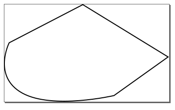
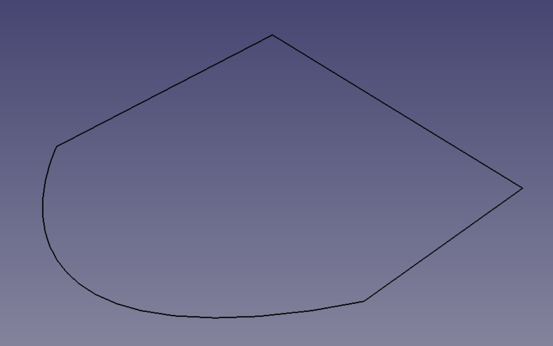
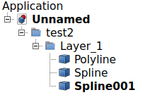
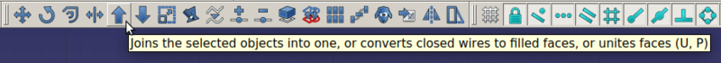
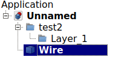
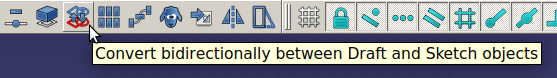
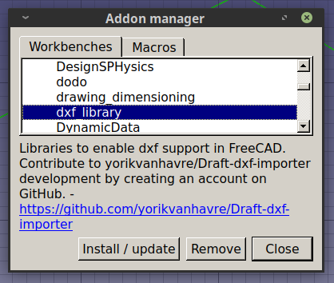

Решение проблемы импорта чертежей из Inkscape во FreeCAD

Есть два приложения для linux, которые мне очень нравятся - это Inkscape и FreeCAD. Первый - двухмерный редактор векторной графики. Второй - трёхмерный редактор, который я часто использую для создания моделей, затем отправляющихся на 3d печать. Оба OpenSource и оба хороши тем, что портированы в том числе под Windows и MacOS. И вот, ещё во времена debian седьмой версии не было никаких проблем, чтобы из поставляющегося в составе дистрибутива Inkscape что-то экспортировать в DXF и открыть это во FreeCAD. Точнее, импортировать было можно, но после импорта мы получали множество объектов типа Polyline и Spline, которые затем объединялись и могли быть конвертированы в четрёж, т.е. в Draft. С какой-то версии FreeCAD при попытке перевода объединения линий в чертёж, создавались пустые чертежи в том случае, если среди линий были кривые, т.е. объекты типа Spline. Я долго страдал по этому поводу, ведь есть вещи, которые куда удобнее и приятнее нарисовать в Inkscape и затем импортировать во FreeCAD, чем рисовать непосредственно во FreeCAD'е. Всё дело в том, что в Inkscape намного удобнее реализован инструмент работы с кривыми Безье, направляющими и сеткой.
Так же полезно выгрузить чертежи из Inkscape во FreeCAD и собрать модель корпуса, чтобы увидеть, как она будет выглядеть в собранном состоянии, покрутить, рассмотреть со всех сторон и, вероятно, найти некие несоответствия пазов и отверстий в случае, если вы готовите в Inkscape чертёж для лазерной резки. Как говорится, семь раз отмерь, отдин раз отрежь. Вот в этом моём старом посте как раз можно увидеть наглядную иллюстрацию подобного процесса.
Стоковый FreeCAD в Linux Mint 19.2, и, соответственно, в Ubuntu 18.04 имеет версию 0.16. Это достаточно устаревшая версия. Я проверил наличие проблемы и в версии 0.17 и в версии 0.18 и в 0.19 - проблема везде имела место.
Я прочитал множество форумов на эту тему, ставил кучу разных версий библиотек, собирал их из исходников, но решение нашёл только сегодня. В версии 0.16 я не нашёл Addon Manager (может быть плохо искал, но кажется, он действительно появился только в более старших версиях), поэтому поставил версию 0.17. На текущий момент актуальна версия 0.18, но я буду делать всё в 0.17-й, т.к. она у меня уже установлена. Скачать последние версии FreeCAD можно тут. Для Linux подойдёт файл в формате AppImage. Просто скачиваем файл, выдаём на него права для запуска и запускаем.
wget https://github.com/FreeCAD/FreeCAD/releases/download/0.18.3/FreeCAD_0.18-16131-Linux-Conda_Py3Qt5_glibc2.12-x86_64.AppImage
chmod +x FreeCAD_0.18-16131-Linux-Conda_Py3Qt5_glibc2.12-x86_64.AppImage
./FreeCAD_0.18-16131-Linux-Conda_Py3Qt5_glibc2.12-x86_64.AppImage
Сначала покажу, что не работает в текущем состоянии, если вы мне и так верите, можете сразу промотать ниже.
Открываем Inkscape, рисуем произвольный замкнутый контур, включающий кривую линию, затем идём в свойства документа и ограничиваем размер документа размером нашего контура. У меня получилось вот так:

Нажимаем ctrl+shift+s и сохраняем деталь в формате dxf.
Затем во FreeCAD, создаём новый документ и нажимаем ctrl+i (импорт) и выбираем наш сохранённый dxf файл. Как видим, файл успешно импортировался:

В дереве объектов появились ломаная и две кривых (Spline).

Теперь переходим в режим редактирования набросков (Draft), выделяем в дереве объектов кривые и ломаную линию с зажатой клавишей shift, а затем объединяем их в один объект Wire с помощью вот этой кнопки:

Должно получиться вот так:

Далее преобразуем черновик (Draft) в чертёж (Sketch) и выделим черновик в дереве объектов.

Cделаем его невидимым с помощью кнопки пробел. В моём случае чертёж оказывался пустым и изображение в рабочем поле исчезало полностью. Если в вашем так же, ниже я расскажу, как исправить ситуацию. Всё предельно просто. Заходим в меню Tools -> Addon Manager, ждём загрузки списка расширений, затем во вкладке "Workbenches" ищем пункт с названием dxf_library.

Выделяем его и жмём "Install / update", после чего перезапускаем FreeCAD и больше данная проблема нас не беспокоит. С этого момента можно проектировать двумерные чертежи моделей в Inkscape, затем переносить во FreeCAD, делать из них четрежи, выдавливать и затем собирать объект по частям.